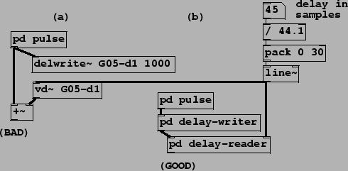

In non-recirculating delay networks, it should be possible to place the operation of writing into the delay line earlier in the sequence than that of reading it. There should thus be no lower limit on the length of the delay line (except whatever is imposed by the interpolation scheme; see Section 7.7). In languages such as Csound, the sequence of unit generator computation is (mostly) explicit, so this is easy to specify. In graphical patching environments, however, the order is implicit and another approach must be taken to ensuring that, for example, a delwrite~ object is computed before the corresponding delread~ object. One way of accomplishing this is shown in example G05.execution.order.pd (Figure 7.28).
|  |
In part (a) of the figure, the connections in the patch do not determine which order the two delay operations appear in the sorted sequence of tilde object computation; the delwrite~ object could be computed either before or after the vd~ object. If we wish to make sure the writing operation happens before the reading operation, we can proceed as in part (b) of the figure and put the two operations in subpatches, connecting the two via audio signals so that the first subpatch must be computed before the second one. (Audio computation in subpatches is done atomically, in the sense that the entire subpatch contents are considered as the audio computation for the subpatch as a whole. So everything in the one subpatch happens before anything in the second one.)
In this example, the ``right" and the ``wrong" way to make the comb filter have audibly different results. For delays less than 64 samples, the right hand side of the patch (using subpatches) gives the correct result, but the left hand side can't produce delays below the 64 sample block size.